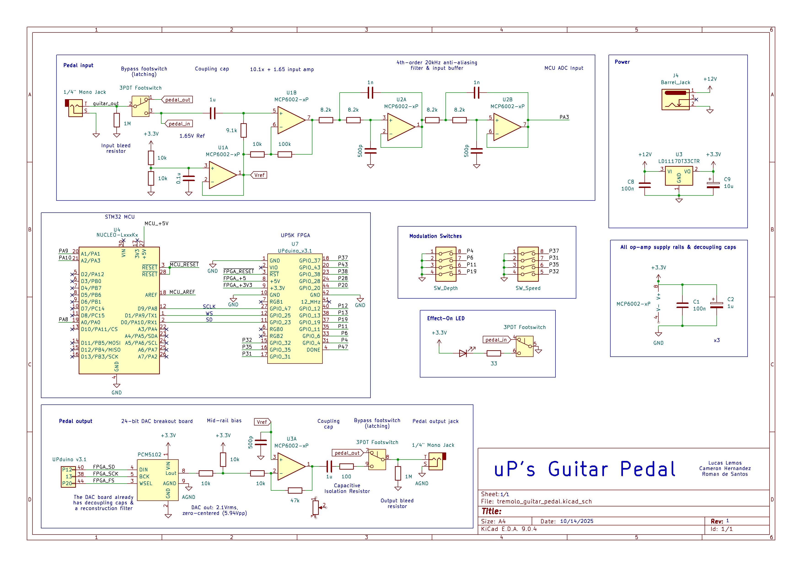

Documentation
- New Communication Protocol Section 1
- New Hardware Section 2
- PCM5102 DAC Section 2.1
- Op Amp Hardware Section 2.2
- Schematics Section 3
- Analog Block Diagram Section 4
- Bill of Materials Section 5
- Github Breakdown Section 6
1 New Protocol I2S
This section discusses the protocol used to communicate between the FPGA, MCU, and the DAC. Our group decided to use the I2S Standard format ( NXP Semiconductors) due to it being a standard audio format that at an initial review seemed relativly easy to implement in verilog.
From the image below, the I2S shows how the input data (SD) is serialized and uses a reference clock (sclk) to transfer the bits. word select (ws) dictates wether the line is transfering left or right chanel audio, where ws=0 means left chanel and ws=1 means right chanel. Since our group decided to do mono audio our data packet was duplicated accross both the left and right channel.

Notice that the MSB of the current frame is one cycle delayed after WS toggles. For us it was also important to realize data by a transmitter is set on the negative edge of sclk while a reciever reads data on the positive edge of sclk. This prevents metastability issues making the protocol more reliable.
The overall bitsize is configurable, but we decided to use 16 bit audio since that was the minimum our DAC supported and our ADC only had a resolution of 12 bits.
2 New Hardware
This section contains a listing of our new hardware and a short description of its implementation.
2.1 PCM5102 DAC
This DAC was the most critical new component we using in our project. This DAC has native support for I2S to analog output. This circuit is also able to generate its own master clock based on the WS input
This bord uses a slightly different naming convention for the inputs compared to the official NXP Semiconductors standard, but the convention is similar.
| PCM5102 Naming | NXP Standard | Required? | Function |
|---|---|---|---|
| SCLK | MCLK | No | Master CLock for filtering/reference |
| BCK | SCLK | Yes | Bit clock |
| DIN | SD | Yes | Serial data |
| LCK | WS | Yes | Left/Right select |
This DAC has control pins that can be shorted to H/L pads to reduce wiring complexity. Figure 2 shows these pins on the back of the DAC, labled HxL (x ranges from 1-4).

The functionality of these pins are as follows (from this forum):
- FLT - Filter select : Normal latency (Low) / Low latency (High)
- DEMP - De-emphasis control for 44.1kHz sampling rate: Off (Low) / On (High)
- XSMT - Soft mute control(1): Soft mute (Low) / soft un-mute (High)
- FMT - Audio format selection : I2S (Low) / Left justified (High)
Note we also grounded SCLK to ensure the master clock was internally generated by the chip.
Our setup for I2S audio used:
- FLT : Low
- DEMP : Low
- XSMT : High
- FMT : Low
After succesful setup, the dac was able to read I2S signals and correctly display its analog equivalent. This was tested by feeding a wavegen sinewave into the MCU’s ADC and passing the I2S output to the DAC and comparing the input and output waveform.
This peice of hardware introduced us to mixed signal processing, specifically in audio. Previously we had a lab, lab 4 where we used PWM waves to control a speaker. In this lab the output was strictly digital. With our new set up, our hardware expands on this and allows us to use many more intensity levels to create richer audio.
2.2 Op-Amp Hardware
For this project MCP6002 op Amps were used for the analog conditioning. From Figure 3, the schematic shows the initial conditioning was done by op-Amps U1A and U1B. This stage centers the signal around 1.65V since the MCU’s ADC can only read voltages between 0-3.3V. The input guitar signal is also quite weak at a max of 300mV, so a gain of 10.1 is applied to the input signal to increase the dynamic range the MCU can read.
The next stage consists of op Amps U2A and U2B. These op amps are two 2nd-order sallen-key low-pass filters in series. The cuttoff frequency of this circuit is about 27.4KHz thus the -3dB point is pushed slightly higher to ensure the 20kHz audio band remains flat, but not too far. This helps reduce the presence of high frequency signals from the guitar when the ADC samples the signal.
The next analog section with active filtering by op Amps is connected to the DAC output. Here an op Amp is used to regulate the signal back to to a safe range for the guitar amp since the amp expects voltages in the range of 100s of mV. The ouput of this topology is passed through an AC couple to remove DC bias, centering the wave back at zero and removing the offset we added initially to place it in the range of 0-3.3V for the MCU. This allows us to use the bipolar output of the guitar amp.
3 Schematic
Below in Figure 3 a schematic of our system is provided.The general flow of the diagram is left to right, top to bottom.

4 Analog Block Diagram
Below in Figure 4 the Block diagram for the Analog input shown. For more detailed block diagrams of each section (MCU/FPGA) please check their respective page.

5 Bill of Materials
| Item Description | Part Number | Source | QTY | Unit Price | Shipping | Tax | Net Cost |
|---|---|---|---|---|---|---|---|
| DC Power Jack | A-1656 | Tayda Electronics | 1 | 0.14 | 1.19 | 0.00 | 1.33 |
| Pedal Switch | A7459 | Tayda Electronics | 1 | 2.70 | 1.19 | 0.00 | 3.89 |
| Pot Knobs Plastic | A-4560 | Tayda Electronics | 3 | 0.42 | 1.19 | 0.00 | 2.45 |
| Pot Knobs Aluminium | A-5966 | Tayda Electronics | 3 | 0.63 | 1.19 | 0.00 | 3.08 |
| Linear Pot 10K | A-8047 | Tayda Electronics | 3 | 0.59 | 1.19 | 0.00 | 2.96 |
| Log Pot 10K | A-1957 | Tayda Electronics | 3 | 0.50 | 1.19 | 0.00 | 2.69 |
| Pot Cover | A-5527 | Tayda Electronics | 3 | 0.04 | 1.19 | 0.00 | 1.31 |
| PCB Standoffs | A-2868 | Tayda Electronics | 7 | 0.10 | 1.19 | 0.00 | 1.89 |
| 6.35mm Nut | A-6441 | Tayda Electronics | 3 | 0.07 | 1.19 | 0.00 | 1.40 |
| 9V Battery Holder | A-843 | Tayda Electronics | 2 | 0.47 | 1.19 | 0.00 | 2.13 |
| 6.35mm 1/4” Stereo socket | A-5069 | Tayda Electronics | 3 | 0.38 | 1.19 | 0.00 | 2.33 |
| Enclosure | A-5837 | Tayda Electronics | 1 | 5.99 | 1.19 | 0.00 | 7.18 |
| 6.35mm 1/4” Mono Socket | A-4556 | Tayda Electronics | 2 | 0.87 | 1.19 | 0.00 | 2.93 |
| 3PDT Nut | A-4802 | Tayda Electronics | 1 | 0.39 | 1.19 | 0.00 | 1.58 |
| DAC PCM5102 | B0DNW32Y46 | Amazon | 2 | 4.44 | 0 | 0.44 | 9.75 |
| TOTAL | 46.9 |
6 Github
All of our source code is found on our project’s github here. Notible files are listed below.
FPGA/:DSP/Contains the chorus effect DSP algorithm with testbenchesI2S/Contains I2S tx and rx module along with all testbench filesLFO/Folder with the code to generate low frequency oscilations with a look up tableTOP/A folder with all of the top module files and testbenches for the top module.
LTspice/:- Analog simulation files to verify circuit
MCU/STMcubeMX/:core/contains the src files and header files for the HAL librarySTMcubeMX.iocconfiguration file for HAL library
Quarto/:- All of the website files for the project
kiCAD/tremolo_guitar_pedal:- All of the kiCAD files for this project, including source and rendered schematics